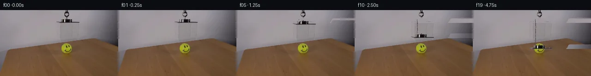
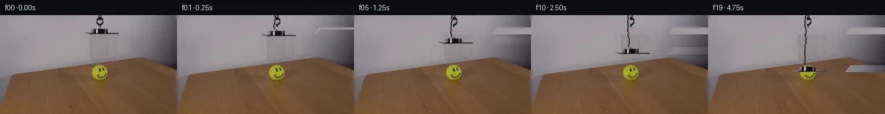
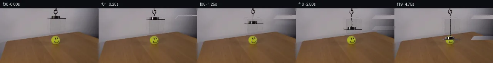
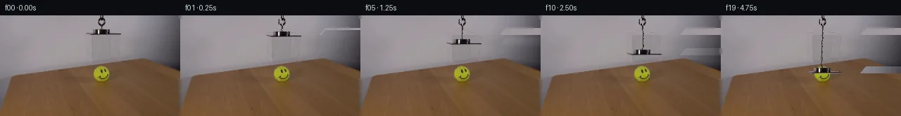
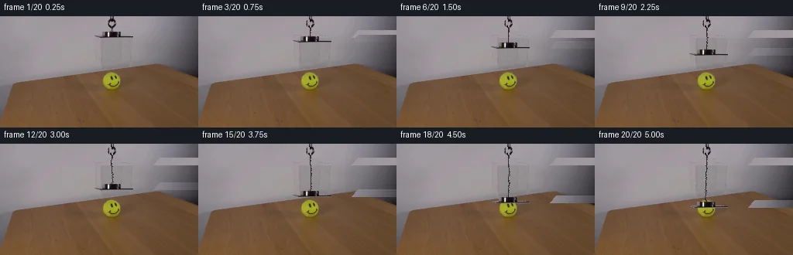
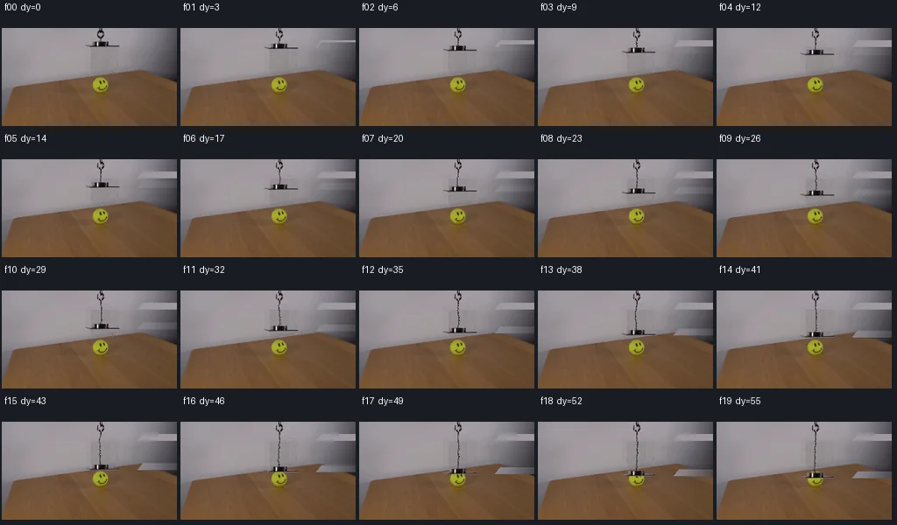

V0 · 初版
2026-11-05T21:28:45.286773+00:00 · RGB b158d83c71d6
![]()
Observable Generation Trace
把最终像素视频、Harness 冻结的每轮候选、真实工具事件和 Agent 自述放在同一页。可观测证据与模型自述分开标记，避免把“模型说它检查过”误当成真实工具调用。
![首帧]()
Static locked-off single-shot with fixed frame throughout filmed with constant framerate in real-time. The scene shows a realistic scientific demonstration. The scene only contains the described setup and actions. The clear acrylic box was suspended over the tennis ball with a smiley face. The tennis ball with the smiley is positioned on a wooden table. The clear acrylic box hanging from an orange cord lowers to cover the tennis ball with a smiley face.
首帧显示在左侧播放器初始画面。Track 权限、隔离和 tensor 一致性来自 run manifest，而不是 METHOD.md。
默认勾选初版和最终版；可选其他版本一起同步播放。仅检查图更新的连续重复快照已合并，回退旧视频仍保留为一次修订。
Observable events
来源：events.jsonl + run manifest
此 Track 禁止读取输出图片。逐轮预览由外部 Harness 自动冻结，只用于事后审计，生成 Agent 当时看不到这些页面。
Frozen candidates
每张图来自该 round 的真实 00 / 01 / 05 / 10 / 19 帧

pixels 23a0282ad4efc9dd · code fb8f3856d1c57e59
--- previous/generate.py
+++ current/generate.py
@@ -0,0 +1,296 @@
+#!/usr/bin/env python3
+"""generate.py — Generate 20-frame animation: acrylic box lowers to cover tennis ball."""
+
+from pathlib import Path
+import numpy as np
+from PIL import Image
+
+# ── Load frame 0 ──────────────────────────────────────────────────
+case_dir = Path.cwd()
+frame0 = np.array(Image.open(case_dir / "first_frame.png"))
+assert frame0.shape == (144, 256, 3) and frame0.dtype == np.uint8
+H, W = 144, 256
+
+# ── Wall background model ─────────────────────────────────────────
+# Sample wall from left side (rows 28–55, cols 5–100)
+wall_sample = frame0[28:55, 5:100].astype(np.float64)
+wall_mean = wall_sample.mean(axis=(0, 1)) # ≈ (157, 151, 155)
+wall_std = wall_sample.std(axis=(0, 1)) # ≈ (6, 5, 5)
+
+# Local per-row wall mean (captures subtle vertical gradient)
+wall_per_row = np.zeros((H, 3), dtype=np.float64)
+for y in range(28, 55):
+ wall_per_row[y] = frame0[y, 10:120].astype(np.float64).mean(axis=0)
+# Extend to upper rows (use row 28 as default)
+for y in range(0, 28):
+ wall_per_row[y] = wall_per_row[28]
+# Extend to lower rows (use last known value)
+for y in range(55, H):
+ wall_per_row[y] = wall_per_row[54]
+
+# ── Box extraction ────────────────────────────────────────────────
+# Box visible region: rows 18–28 (10 rows), cols 120–256
+box_y0, box_y1 = 18, 28
+box_x0, box_x1 = 120, 256
+box_h = box_y1 - box_y0 # 10
+box_w = box_x1 - box_x0 # 136
+
+box_region = frame0[box_y0:box_y1, box_x0:box_x1].astype(np.float64)
+
+# Background estimate INSIDE the box region (use cols just left of box)
+box_bg_sample = frame0[box_y0:box_y1, 5:115].astype(np.float64)
+box_bg_mean = box_bg_sample.mean(axis=(0, 1))
+
+# Box mask: pixels significantly different from local background
+diff = np.sqrt(np.sum((box_region - box_bg_mean) ** 2, axis=2))
+# Use adaptive threshold: darker and brighter than background
+bright_diff = np.max(box_region - box_bg_mean, axis=2)
+dark_diff = np.max(box_bg_mean - box_region, axis=2)
+box_mask = (diff > 35) # | (bright_diff > 30) | (dark_diff > 30)
+
+# Also capture the thin dark line at row 27 (bottom edge of frame)
+# Lower threshold for very dark pixels at bottom row
+for yy in range(box_h):
+ for xx in range(box_w):
+ r, g, b = box_region[yy, xx]
+ if r < 80 and g < 80 and b < 80:
+ box_mask[yy, xx] = True
+
+box_pixels = box_region.copy()
+box_mask_3d = np.broadcast_to(box_mask[..., None], box_region.shape)
+
+print(f"Box mask: {box_mask.sum()} / {box_mask.size} pixels ({100*box_mask.sum()/box_mask.size:.1f}%)")
+
+# ── Cord extraction ───────────────────────────────────────────────
+# Cord is a thin vertical structure at x≈140 from y≈0 to y≈25
+# Find the exact cord center and color profile
+cord_x_center = 140
+cord_x_range = range(135, 147)
+cord_y_max = 26 # Up to where cord meets box
+
+# Build cord color profile per row
+cord_profile = {} # y -> (x, RGB)
+for y in range(0, cord_y_max):
+ best_x = cord_x_center
+ best_r = 0
+ for x in cord_x_range:
+ r, g, b = frame0[y, x]
+ # Cord pixels are slightly redder than background
+ if r > g + 3 and r > b + 3:
+ cord_profile[y] = (x, np.array([r, g, b], dtype=np.uint8))
+ break
+
+# Fill gaps in cord profile by interpolation
+cord_ys = sorted(cord_profile.keys())
+if cord_ys:
+ cord_top_y = cord_ys[0]
+ # Cord visible color - take median of cord pixels
… diff truncated; 209 more lines …
pixels 13de2e9540c3b70a · code 52e89d54077dfbc6
--- previous/generate.py
+++ current/generate.py
@@ -3,254 +3,220 @@
from pathlib import Path
import numpy as np
-from PIL import Image
+from PIL import Image, ImageDraw
# ── Load frame 0 ──────────────────────────────────────────────────
case_dir = Path.cwd()
frame0 = np.array(Image.open(case_dir / "first_frame.png"))
assert frame0.shape == (144, 256, 3) and frame0.dtype == np.uint8
H, W = 144, 256
+RNG = np.random.RandomState(42)
# ── Wall background model ─────────────────────────────────────────
-# Sample wall from left side (rows 28–55, cols 5–100)
wall_sample = frame0[28:55, 5:100].astype(np.float64)
-wall_mean = wall_sample.mean(axis=(0, 1)) # ≈ (157, 151, 155)
-wall_std = wall_sample.std(axis=(0, 1)) # ≈ (6, 5, 5)
-
-# Local per-row wall mean (captures subtle vertical gradient)
-wall_per_row = np.zeros((H, 3), dtype=np.float64)
+WALL_MEAN = wall_sample.mean(axis=(0, 1)) # ~(157, 151, 155)
+WALL_STD = wall_sample.std(axis=(0, 1))
+
+# Per-row wall estimate (captures subtle vertical gradient)
+wall_row_mean = np.zeros((H, 3), dtype=np.float64)
for y in range(28, 55):
- wall_per_row[y] = frame0[y, 10:120].astype(np.float64).mean(axis=0)
-# Extend to upper rows (use row 28 as default)
-for y in range(0, 28):
- wall_per_row[y] = wall_per_row[28]
-# Extend to lower rows (use last known value)
-for y in range(55, H):
- wall_per_row[y] = wall_per_row[54]
+ wall_row_mean[y] = frame0[y, 10:110].astype(np.float64).mean(axis=0)
+wall_row_mean[:28] = wall_row_mean[28]
+wall_row_mean[55:] = wall_row_mean[54]
+
+# Wall texture bank rows
+wall_tex = {}
+for y in range(28, 55):
+ wall_tex[y] = frame0[y, 10:110].astype(np.float64)
+tex_len = 100 # cols 10-110
# ── Box extraction ────────────────────────────────────────────────
-# Box visible region: rows 18–28 (10 rows), cols 120–256
-box_y0, box_y1 = 18, 28
-box_x0, box_x1 = 120, 256
-box_h = box_y1 - box_y0 # 10
-box_w = box_x1 - box_x0 # 136
-
-box_region = frame0[box_y0:box_y1, box_x0:box_x1].astype(np.float64)
-
-# Background estimate INSIDE the box region (use cols just left of box)
-box_bg_sample = frame0[box_y0:box_y1, 5:115].astype(np.float64)
-box_bg_mean = box_bg_sample.mean(axis=(0, 1))
-
-# Box mask: pixels significantly different from local background
-diff = np.sqrt(np.sum((box_region - box_bg_mean) ** 2, axis=2))
-# Use adaptive threshold: darker and brighter than background
-bright_diff = np.max(box_region - box_bg_mean, axis=2)
-dark_diff = np.max(box_bg_mean - box_region, axis=2)
-box_mask = (diff > 35) # | (bright_diff > 30) | (dark_diff > 30)
-
-# Also capture the thin dark line at row 27 (bottom edge of frame)
-# Lower threshold for very dark pixels at bottom row
-for yy in range(box_h):
- for xx in range(box_w):
+# The box visible region occupies roughly rows 18-28, cols 125-256
+# Includes: dark frame edges, white specular highlights, box structure
+BOX_Y0, BOX_Y1 = 18, 28
+BOX_X0, BOX_X1 = 120, 256
+BOX_H = BOX_Y1 - BOX_Y0 # 10
+BOX_W = BOX_X1 - BOX_X0 # 136
+
+box_region = frame0[BOX_Y0:BOX_Y1, BOX_X0:BOX_X1].astype(np.float64)
+
+# Local background: sample from left of box at same rows
+box_local_bg = frame0[BOX_Y0:BOX_Y1, 5:115].astype(np.float64).mean(axis=(0, 1))
+
+# Box mask: pixels that are NOT wall-like
+diff_from_wall = np.sqrt(np.sum((box_region - box_local_bg) ** 2, axis=2))
+box_mask = diff_from_wall > 30 # more than 30 away from wall color
+
+# Also capture very dark pixels (frame edges)
+for yy in range(BOX_H):
+ for xx in range(BOX_W):
… diff truncated; 410 more lines …pixels 13de2e9540c3b70a · code 52e89d54077dfbc6
No generate.py text change in this frozen round.

pixels fe7fb7cba31c9691 · code 6163659159f7197b
--- previous/generate.py
+++ current/generate.py
@@ -14,46 +14,39 @@
# ── Wall background model ─────────────────────────────────────────
wall_sample = frame0[28:55, 5:100].astype(np.float64)
-WALL_MEAN = wall_sample.mean(axis=(0, 1)) # ~(157, 151, 155)
-WALL_STD = wall_sample.std(axis=(0, 1))
-
-# Per-row wall estimate (captures subtle vertical gradient)
+WALL_MEAN = wall_sample.mean(axis=(0, 1)) # ~(157.4, 150.7, 155.4)
+
+# Per-row wall estimate
wall_row_mean = np.zeros((H, 3), dtype=np.float64)
for y in range(28, 55):
wall_row_mean[y] = frame0[y, 10:110].astype(np.float64).mean(axis=0)
wall_row_mean[:28] = wall_row_mean[28]
wall_row_mean[55:] = wall_row_mean[54]
-# Wall texture bank rows
+# Wall texture bank
wall_tex = {}
for y in range(28, 55):
wall_tex[y] = frame0[y, 10:110].astype(np.float64)
-tex_len = 100 # cols 10-110
+TEX_LEN = 100
# ── Box extraction ────────────────────────────────────────────────
-# The box visible region occupies roughly rows 18-28, cols 125-256
-# Includes: dark frame edges, white specular highlights, box structure
BOX_Y0, BOX_Y1 = 18, 28
BOX_X0, BOX_X1 = 120, 256
BOX_H = BOX_Y1 - BOX_Y0 # 10
BOX_W = BOX_X1 - BOX_X0 # 136
box_region = frame0[BOX_Y0:BOX_Y1, BOX_X0:BOX_X1].astype(np.float64)
-
-# Local background: sample from left of box at same rows
box_local_bg = frame0[BOX_Y0:BOX_Y1, 5:115].astype(np.float64).mean(axis=(0, 1))
-# Box mask: pixels that are NOT wall-like
+# Box mask
diff_from_wall = np.sqrt(np.sum((box_region - box_local_bg) ** 2, axis=2))
-box_mask = diff_from_wall > 30 # more than 30 away from wall color
-
-# Also capture very dark pixels (frame edges)
+box_mask = diff_from_wall > 30
+
for yy in range(BOX_H):
for xx in range(BOX_W):
r, g, b = box_region[yy, xx]
if r < 70 and g < 70 and b < 70:
box_mask[yy, xx] = True
- # Also capture bright white highlights
if r > 230 and g > 230 and b > 230:
box_mask[yy, xx] = True
@@ -61,122 +54,158 @@
print(f"Box mask: {box_mask.sum()} / {BOX_H * BOX_W} pixels ({100 * box_mask.sum() / (BOX_H * BOX_W):.1f}%)")
# ── Cord model ────────────────────────────────────────────────────
-# The cord is a thin reddish-dark vertical line from y≈0 to box top
-# at x≈140. Detect it from the original frame.
-
-# Find cord x by looking for darkest vertical streak in cols 138-143, rows 3-18
-cord_candidates = {}
+# The cord is a thin, slightly wavy dark line from y≈0 to box top.
+# Detect original cord pixels as significantly darker than wall.
+
+# First, find cord x center by darkness score
+cord_x_scores = {}
for x in range(138, 144):
- streak = frame0[3:19, x].astype(np.float64)
- # Cord is darker than wall
- darkness = np.sum(np.maximum(0, wall_row_mean[3:19, 0] - streak[:, 0]))
- cord_candidates[x] = darkness
-
-best_cord_x = max(cord_candidates, key=cord_candidates.get)
-print(f"Cord center x: {best_cord_x} (darkness scores: { {k: f'{v:.0f}' for k, v in cord_candidates.items()} })")
-
-# Cord color: average of dark reddish pixels at best_cord_x
-cord_pixels = []
-for y in range(3, 19):
- r, g, b = frame0[y, best_cord_x]
- if r < np.mean(wall_row_mean[y]) - 20: # significantly darker than wall
- cord_pixels.append(np.array([r, g, b], dtype=np.float64))
-
-if cord_pixels:
- CORD_COLOR = np.mean(cord_pixels, axis=0)
+ darkness = 0
… diff truncated; 320 more lines …pixels fe7fb7cba31c9691 · code 6163659159f7197b
No generate.py text change in this frozen round.

pixels 6cb00600d1f23256 · code 62d038bee2568fa6
--- previous/generate.py
+++ current/generate.py
@@ -197,15 +197,15 @@
# Erase box from original position, fill with wall
fill_box_vacated(frame, RNG)
- # Place box at new position
+ # Erase original cord, fill with wall
+ erase_old_cord(frame)
+
+ # Draw cord from top to box top (inclusive - box will be placed on top)
+ cord_bot = BOX_Y0 + dy
+ draw_cord_new(frame, 0, cord_bot + 1, RNG)
+
+ # Place box at new position (on top of cord at attachment point)
place_box(frame, dy)
-
- # Erase original cord
- erase_old_cord(frame)
-
- # Draw cord from top to new box top
- cord_bot = BOX_Y0 + dy
- draw_cord_new(frame, 0, cord_bot, RNG)
frames.append(frame)
pixels 6cb00600d1f23256 · code 62d038bee2568fa6
No generate.py text change in this frozen round.
Final visual checks
Harness 保存的最终产物


Agent claims
以下文字由生成 Agent 撰写，不等同于工具证据
The clear acrylic box, suspended from an orange cord, lowers vertically to cover the tennis ball with a smiley face. Camera is static (locked-off single shot). Linear constant-velocity motion over 5 seconds at 4 fps.
| Frame | Time | dy | Box Top y | Description |
|---|---|---|---|---|
| 00 | 0.00s | 0 | 18 | Box at original suspended position. Identical to first_frame.png. |
| 01 | 0.25s | 3 | 21 | Box begins descent, cord elongates. |
| 02 | 0.50s | 6 | 24 | Box continues lowering. |
| 03 | 0.75s | 9 | 27 | Steady descent. |
| 04 | 1.00s | 12 | 30 | Cord visibly longer. |
| 05 | 1.25s | 14 | 32 | |
| 06 | 1.50s | 17 | 35 | |
| 07 | 1.75s | 20 | 38 | |
| 08 | 2.00s | 23 | 41 | |
| 09 | 2.25s | 26 | 44 | |
| 10 | 2.50s | 29 | 47 | Box approaching tennis ball. |
| 11 | 2.75s | 32 | 50 | |
| 12 | 3.00s | 35 | 53 | Box frame begins overlapping ball area. |
| 13 | 3.25s | 38 | 56 | |
| 14 | 3.50s | 41 | 59 | |
| 15 | 3.75s | 43 | 61 | Box frame overlays ball's smiley face. |
| 16 | 4.00s | 46 | 64 | Box edges occlude mid-portion of ball. |
| 17 | 4.25s | 49 | 67 | |
| 18 | 4.50s | 52 | 70 | Box frame covering top of ball. |
| 19 | 4.75s | 55 | 73 | Box fully lowered, frame edges overlaying ball. Ball still visible through transparent sides. |
Pure numpy/PIL pixel manipulation — no external engines, AI models, or network access.
Identified box pixels in rows 18–28, cols 120–256 by thresholding against local background color. Pixels with Euclidean distance > 30 from wall background mean, plus all very dark (R,G,B < 70) and very bright (R,G,B > 230) pixels, classified as box structure (~800 pixels). This captures the dark acrylic frame edges and the white specular highlights on the top face of the box.
Vacated box area filled by sampling wall texture from rows 28–54, cols 10–110. Each pixel replaced with a randomly-offset sample from the corresponding wall row, preserving noise characteristics and subtle vertical gradient.
Box frame edges overlay the tennis ball when the two overlap — the ball remains visible through the transparent acrylic body while the dark frame edges and white specular highlights pass over it.